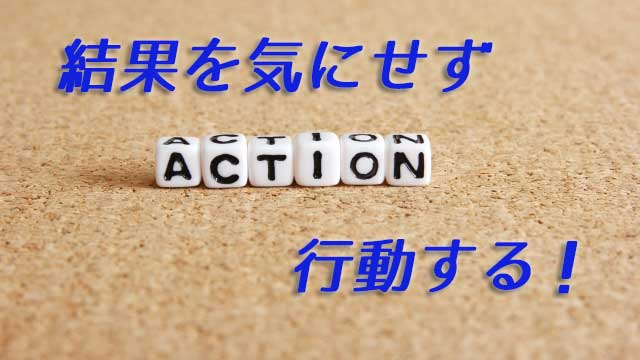

「行動が大事だ。行動しなければ何も始まらない」
よく聞く言葉だが、それは当たり前であって確かに行動しなければ何も始まらない。
どんなに良い考え、アイディアを持っていても行動つまり実行に移さなければ形を成さない。絵に描いた餅である。
こんなことは誰でも知っている。ところがいざ行動となると二の足を踏む人が多いのはどうしてだろう。
「あいつは口先ばかりで行動しない」とか「あの人は所詮評論家だから」と行動しない人を批判する声をよく聞くが、その当人も批判ばかりで行動しなかったりもする。
意見は言うが行動しない。批判はするが行動しない。せっかく良いアイディアがあるのに行動しない。その結果、周囲の現実はまったく動かずますます不平不満が蓄積する。フラストレーションは増しそれらが足かせになって更に行動意欲はそがれていく。こういう人は多いのではないだろうか。
このループから脱けるにはどうすればよいか。行動が必要なことは分かっていても、この重苦しい現実にからめ取られ身動きできない状態の人にとって、スムースに行動して新たな現実を切り開いていくにはどうすればよいのか。
それには、行動できない理由―行動をためらわせる要因―を自分の内部に探ってしっかりと明確にすること。少なくとも何らかの要因があるということを知っておくことが大切だと思う。
「行動」と「結果」は切り離す
行動をためらわせるもっともシンプルな理由は、やはり「失敗」への恐怖や不安である。行動には結果が伴う。口であーだこうだ言ってる限りは責任は発生しないが、行動には結果と大なり小なりの責任が生じる。
大は会社のプロジェクト参加や新たな企画の提案だったり、時には好きな人への告白かも知れない。小は前から欲しかったものを思い切って買うことや、お世話になった人へお礼状を書くことかも知れない。
いずれにせよ行動には何らかの結果が伴う。なので不安になる。
「失敗したら評価が下がる」「うまく行かなかったら大恥だ」「月末の支払いが心配」など。
このように「結果」に対する恐れや心配が自分の中にあることに気づいたら―多くの人はそうだと思うが―次のように考えて欲しい。
「結果に恐れや不安を感じてもいい。それは自然な感情に過ぎない。」その上でこう考える。
「しかし結果は結果で、行動は行動だ。それらは別々のものだ。私は行動したこと自体を評価する」と。
つまり行動と結果を切り離すということ。そして行動したことをプラスとして自己評価するのだ。「行動」とその「結果」を連動させない。人が行動できないのは、行動する前に結果（失敗）を予測するからであって、結果は成功失敗どちらでも良い（ゼロ評価）とすれば「行動した」というプラスしか残らないことになる。
こうすれば「結果」にこだわらないので行動しやすくなる。
結果を気にせず行動する
それでも「失敗が恐い人」にはもうひとつ大切な事実を言おう。
先の例で言うなら「失敗したら評価が下がる」は本当かということ。失敗しても評価が下がるとは限らないが正しいのではないか。その人の置かれた状況や行動目的にもよるが、たとえ失敗しても「難しいことによく挑んだ」としてかえって評価は上がることさえあるのではないか。同じように「うまく行かなくても恥をかくとは限らない」し「月末の支払いができないとも限らない」が実際なのだ。
事実は「やってみなければ分からない」のに勝手に思考でネガティブを予測しているわけなのだ。思考ばかりする人が行動できない理由もここにある。基本的に人間の思考はネガティブに傾きがちで、そこにはいち早く危険を察知する能力に長けた種が生き残る進化的理由があると思われる。つまり私たちは祖先から受け継いだ古いDNAのせいで、起こってもいない出来事（失敗＝危険）を心配する傾向があるということだ。
私は行動をするとき不安を感じたら、「これは先祖のDNA（本能）がもたらすものだ」（笑）と考えることにしている。すると「この不安に実体はない、幻想だ。」と分かり気楽に行動できる。
出典は忘れたが、かつて読んだ本の中に「人が予測する心配ごとの99％は現実に起こらない」という一文があった。その通りだというのが私の実感である。
だからくり返しになるが、行動する際の原則は「結果」にこだわらないこと。行動と結果を結びつけず、行動したという事実を評価すること。この2点を心がけることが大事だ。結果にこだわらなければこだわらないほど、不思議なことに「結果」は好ましいものになる。嘘だと思うならやってみればよい。
「結果を出すことが大事」「いくらガンバっても結果がよくないと何もならない」
そのような結果至上主義や成果主義の声に耳を貸す必要はない。この考えに囚われると、行動しないことの言い訳を無数に生み出してしまう。
それよりもまず「行動する」と決めて「行動した」ことそのものを、自分に対するプラスと評価すればよい。何もしなければゼロだが何かをすれば何かを生み出す。それは次の現実を創造しそれがさらに新たな世界の創造につながる。
適切な行動が取れない理由
さてここまでの話は、結果を恐れてなかなか行動に踏み切れない人へ向けてのものだった。この話で「行動すること」へのハードルはだいぶ低くなったのではないかと思う。
次に「では自分にとって適切な行動」とはどういうものかについて話したい。というのも世の中には「行動第一主義」を掲げて自分にも周囲にも好ましくない影響を及ぼしたり、行動するわりに望ましい状況をつくり出せない人がいるからだ。
「私はバンバン行動してますよ！」というがムダな行動にエネルギーを浪費している人もいるし「一生懸命やってるのに良い結果が出ません」と嘆く人もいる。
こういう人は行動の起点つまりその人の「あり方」に問題がある。
特に次の３つが問題となる。
(1) 目先の損得計算ばかりしている
(2) 他人の思惑を気にしている
(3) 不足や不満などネガティブな感情を出発点にする
行動の動機や目的が損得計算に基づく場合、一時的にうまく行く（得をする）ことはあってもトータルに見ればうまく行かない。目先の利得ばかり求めて結果として大損する人を私はたくさん見てきたが、本人たちはそのことに気づくことさえないのだ。
さらに多くの人が、自分の行動の動機を「他人にどう思われるか」「他人から認められるにはどうすればいいか」に置いている。自分が「どうしたいのか」より他人の視線を基準にしている以上、どんな行動も満足をもたらすことはない。
「本当の自分」を置き去りにしているからだ。
そして３つめ。不足や不満などのネガティブな感情を起点にした行動も良い結果をもたらさない。「現状が良くないから改善しよう」という前向きな意欲に転換するならプラスの行動と言えるだろう。しかし「この状況は嫌だ。見たくない」というなら逃避であり、単なる否定である。否定を土台にした行動は否定的現状を呼び寄せる。いくら外側の環境に働きかけても変わらない。
こういう人は、なぜ現状に不満や不足を感じるのか自分の内面と向き合ってしっかり原因をつきとめるほうが先決だ。全てを他人のせい環境のせいにしていないか。いつも自分を「被害者」の立場に置いていないか。よく考えてみるべきだ。そのままの状態でいくら行動して（あがいて）も世界はますます狭くなるだろう。
行動の適切性は「あり方」で決まる
では、どのような「あり方」でいれば適切な行動をとれるのか。自分が満足でき周囲にとっても好ましい現実をつくる行動とはどのようなものか。
それはまず自分軸を取り戻すことにある。
すなわち「自分が本当にしたいことは何なのか」を知るということだ。多くの人は自分が本当にしたいことが分かっていない。周囲の圧力や損得、「こうすべき」「ああすべき」という常識などに押されるように行動させられている。
行動させられているという事実に気づいて、自ら行動するという主体性を取り戻す。それが自分軸で動くことの基盤となる。
だからまず自分にこう問わなければならない。
「自分はどう在りたいのか」「どんな自分でありたいのか」「どんな自分であるときが本当のありたい自分なのか」何をすべきか、どうすべきかよりこの問いかけのほうが重要だ。
喜びでありたいのか。美しさでありたいのか。幸せでありたいのか。人生で表現したいことは何なのか。
あなたはどうか？あなたはどんな自分で在りたいのだろうか。この問いをつきつめて行けば自ずと「自分のしたいことは何か」が明確になる。
他人がどう思うかや損か得か、良いか悪いかという外側基準の他人軸ではなく「在りたい自分を表現する手段」としてふさわしい行動が起こってくる。まさに起こってくるというのが正しい。
人は行動するに際してあれかこれかと迷う。
「AするべきかそれともBするのが良いか」
「AしたらBになるかも知れない。Bを選べばCになるかも知れない」
しかしAとかBを浮かべている時点で既に選ばされている。
「本当の自分がしたいこと」を基準にすればAでもBでもない新たな道が見つかるかも知れない。それは既存の選択肢からでは得られない大いなる幸福への扉となるだろう。
仮にAかBを選んだとしても「ありたい自分」の選んだ行動として納得できる。
行動の起点を常にありたい自分に置くこと。もし迷ったら「これは本当に自分がしたいことなのだろうか」「本当の自分にふさわしいのだろうか」と内面に問うこと。これを習慣づければ、自分のしたい行動＝全体にも資する行動となるだろう。
なぜならその行動は本当の自分が「したいから」するという純粋動機から起こったものであり、そこには「自分さえよければ」というエゴの入りこむ余地はないからだ。
行動しなければ何も始まらない。それは確かだがその行動の質は「あり方」によって決まる。
「Doingの前にまずBeingが大切だ」ということはそういう意味なのだ。